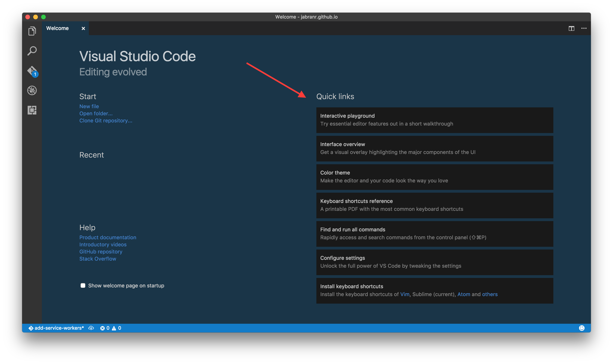
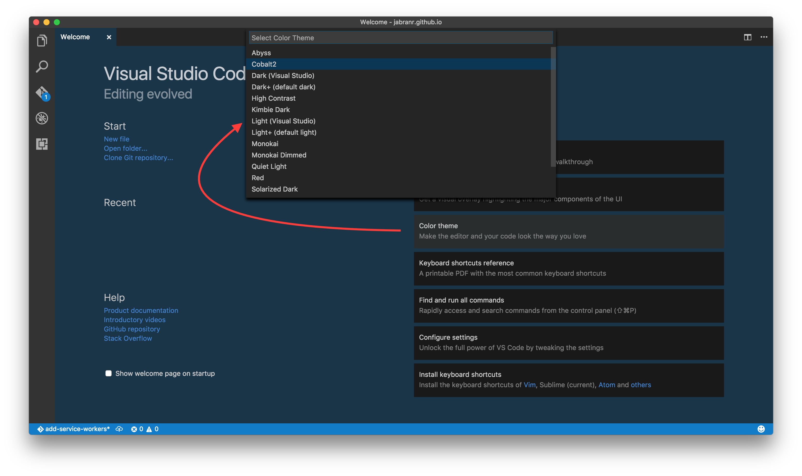
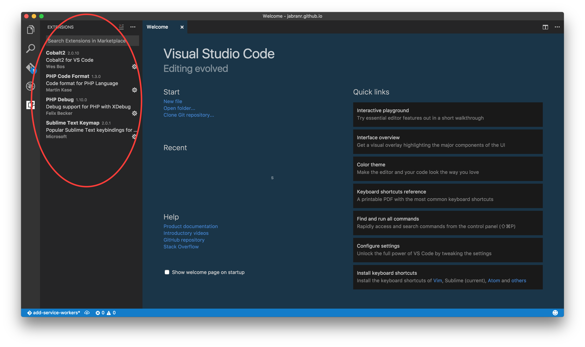

Migrating from Sublime Text to Visual Studio Code
I am a Front-end Web Developer at Rated People (RP) and my day-to-day job requires me to use tools that I am comfortable too work with and those that serve the purpose. This is why everyone in my team uses a different editor of their choice. The company offers all the support required for better workflow and tools regardlessly. After joining RP back in 2015 I was given a PHP/WebStorm license that I hardly used and instead kept on using SublimeText because of my comfortability with it. Nevertheless PHPStorm is a great IDE!
So recently I started to look into Visual Studio Code (vscode) after hearing all the good stuff about it – especially from Twitter and our team lead Simon Delaney. Over this past weekend while learning some advance stuff about HTML5 Canvas, I decided to give vscode a try.
I started with exploring the Welcome screen which gives a fair amount of information to get started.
"Interactive Playground" is one of the best thing to start with. It gives you a chance to try special features of vscode interactively.
"Interface Overview" is totaly the next thing to learn about editor's GUI. It gives an interactive tour of the editor to get your familiarize with all the important options.
"Keyboard Shortcuts Reference" is another handy feature which provides all the shortcuts in PDF format – ready to print. That is useful in case you want to learn vscode key bindings.
If you are coming from IDEs like SublimeText or Atom, you might find many similarities but still there are some important key bindings that work differently i.e. CMD/Ctrl + I to expand selection to whole line instead of CMD/Ctrl + L etc but you don't have to learn new shortcuts of vscode. Enter "Import Keyboard Shortcuts" to import/install extension(s) for your favourite editor and start using them straightaway – be it SublimeText, Atom, PHPStorm, Emacs, Eclipse or vim.
Similarly you can also install a theme of your choice and maintain a desired outlook for the editor. In my case I went for my favourite Wesbos's Cobalt2 theme. Most themes also come with code formatting and styling, and can easily be configured as required.
Since I also regularly work with PHP/Symfony therefore I installed another couple of extensions to support PHP code formatting and debugging. In total I had to install less than a dozen extensions to make it all work the same way as it was in SublimeText. Most of the handy tools and extensions such as Emmet, Git, Debugger, Terminal and Console come default/built-in which is quite useful as compared to an initial setup for SublimeText.
 Some of the most amazing things about vscode I found are:
- built-in support for many utility tools and options i.e. finding object definition etc. Although for some languages such as PHP, features like this need to be configured separately.
- built-in debug console, terminal, version control and more
- lightening fast ⚡
I think I will stick to it for now to give SublimeText a break that it deserves! Go for it and give it a try by downloading from Visual Studio website!
By the way, if you are a UK resident and looking to work on exciting stuff, we are hiring a Front-end Developer at Rated People.
Happy programming!